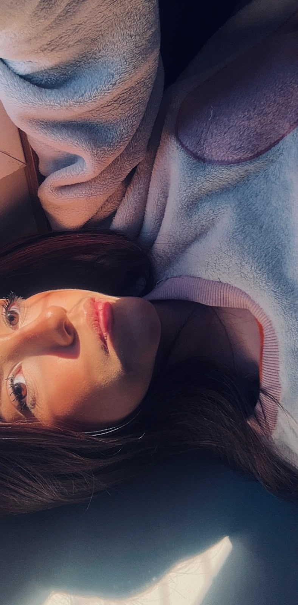
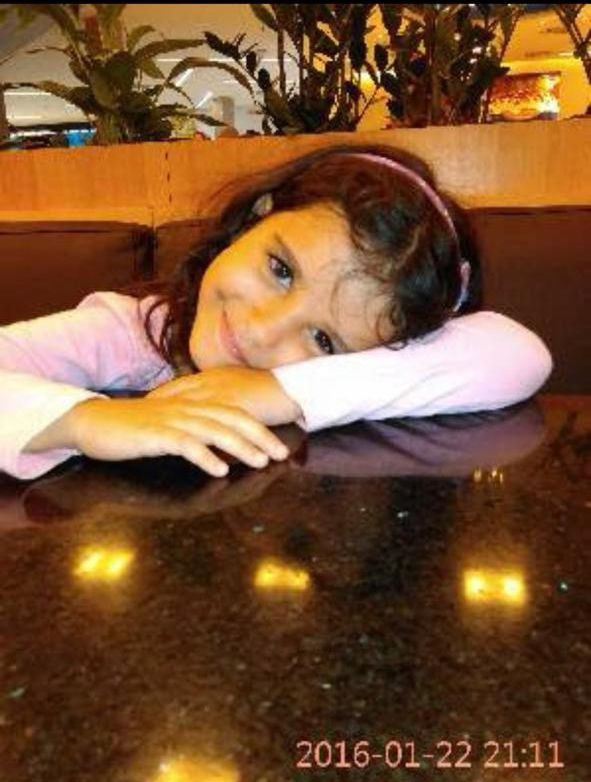
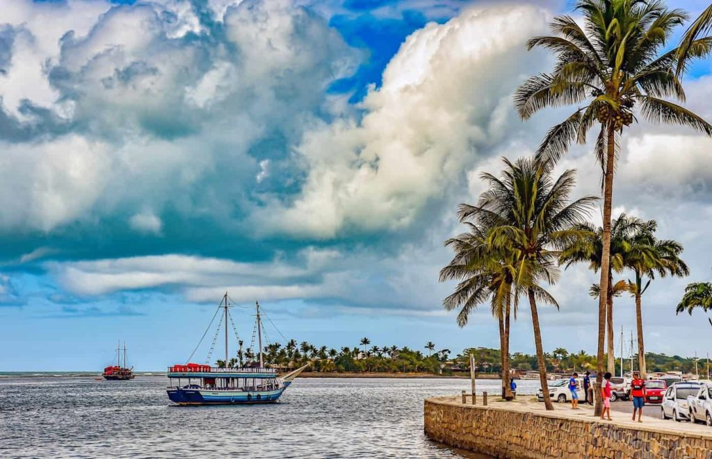
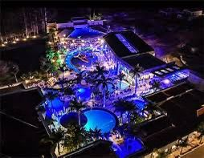
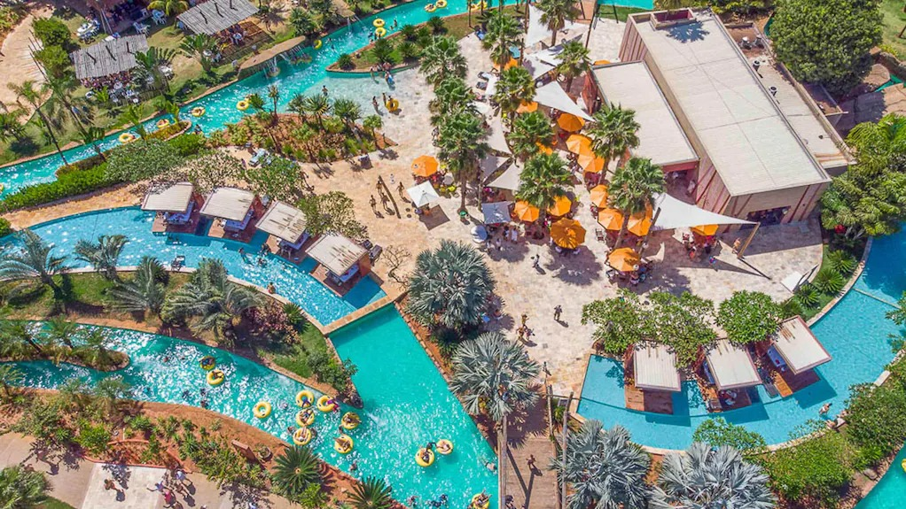
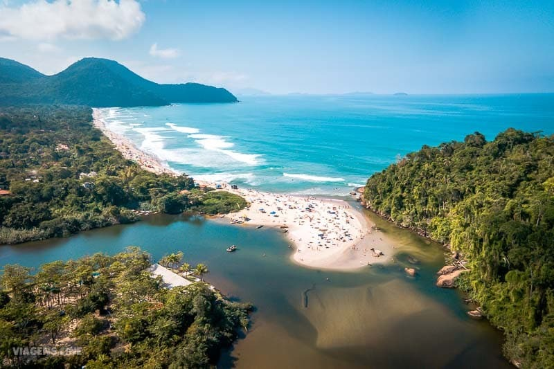
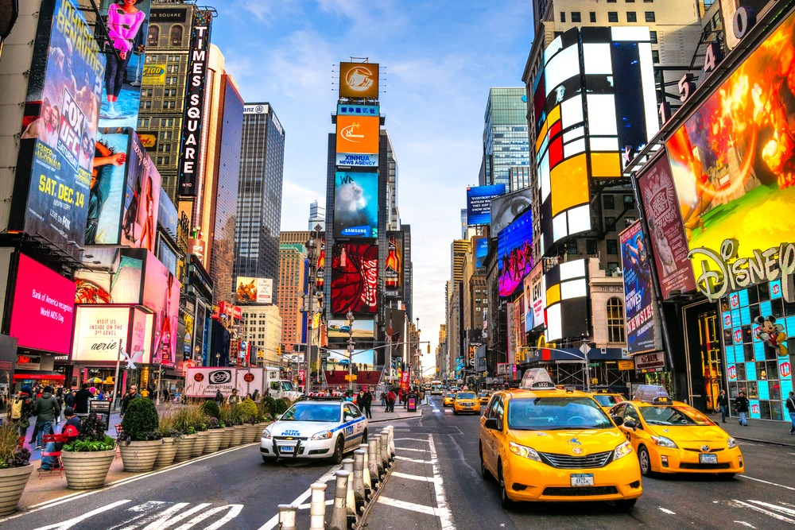
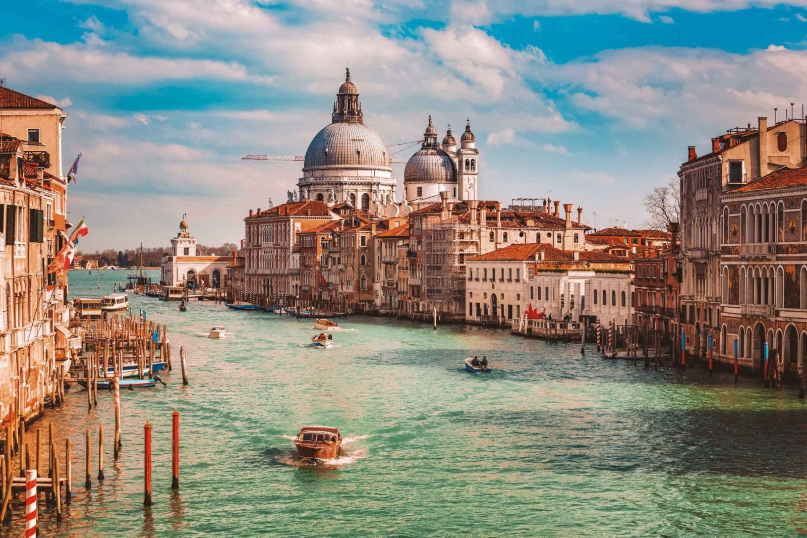
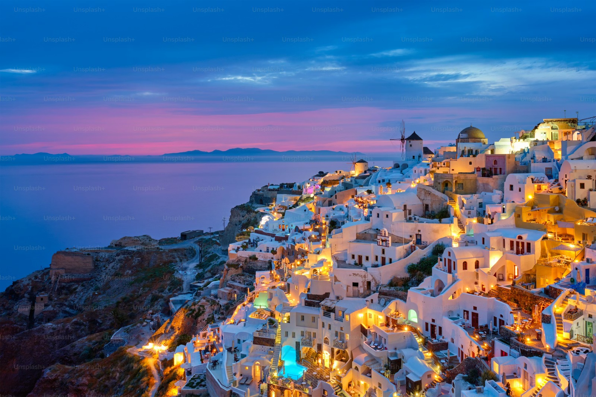
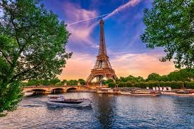

Criatividade e Tecnologia
Adoro tecnologia, mas também gosto muito de colocar minha criatividade em prática fora das telas. Amo fazer coisas com cerâmica fria e criar coisas novas usando a imaginação.
Oi, meu nome é Bruna, tenho 15 anos e adoro tecnologia e coisas relacionadas à criatividade e arte visual. Sou uma pessoa que gosta muito de música, séries e de salvar inspirações de tudo que acho bonito ou interessante.
Também gosto de aprender coisas novas e estou gostando muito do que estou aprendendo atualmente. Acho interessante como pequenos detalhes conseguem mostrar um pouco da personalidade de cada pessoa.
Me considero alguém tranquila, criativa e que está sempre descobrindo novas ideias e coisas que gosta.


Adoro tecnologia, mas também gosto muito de colocar minha criatividade em prática fora das telas. Amo fazer coisas com cerâmica fria e criar coisas novas usando a imaginação.
Sou apaixonada por música, principalmente Justin Bieber, e adoro tudo que envolve vampiros e mistério. Minha série favorita é The Vampire Diaries.
Tenho um irmão gêmeo e um cachorro maltês chamado Floquinho. Também gosto muito de conhecer pessoas novas, conversar e aprender coisas diferentes no dia a dia.
Alguns lugares e lembranças especiais que guardo com carinho.

Foi uma viagem muito especial que fiz com a minha família. Conheci várias praias lindas, aproveitei muito cada momento e gostei bastante da energia do lugar. Foi uma experiência incrível, cheia de momentos felizes e paisagens que eu nunca vou esquecer.

Esse lugar marcou muito a minha viagem de formatura do nono ano, que fizemos com a Travel Rock. Foi uma experiência inesquecível, porque além do resort ser muito bonito e divertido, conheci muitas pessoas incríveis e vivi momentos muito especiais com meus amigos. Com certeza é uma lembrança que vou guardar para sempre.

Essa viagem foi ainda mais especial porque fiz junto com a minha melhor amiga. O parque aquático era muito divertido, cheio de atrações legais, e a viagem inteira foi cheia de risadas e momentos incríveis.

Ubatuba é um lugar que eu gostei muito de conhecer porque adoro praia. Achei as paisagens lindas, as praias incríveis e o clima do lugar muito gostoso. Foi uma viagem muito tranquila e divertida ao mesmo tempo.
Destinos que estão nos meus planos e na minha imaginação.

Nova Iorque é um lugar que sempre imaginei conhecer por causa da energia da cidade. Gosto da ideia de uma cidade que nunca para, cheia de luzes, pessoas diferentes, prédios enormes e lugares famosos que aparecem em séries, filmes e músicas o tempo todo.

Sempre tive vontade de conhecer a Itália porque acho o país cheio de personalidade. Me chama atenção a arquitetura antiga, as ruas que parecem cenário de filme, a arte em cada detalhe e o jeito como história e modernidade conseguem existir juntas. Além disso, acho a cultura italiana muito bonita.

A Grécia me chama atenção porque parece ter uma atmosfera única. Acho lindas as paisagens com o mar azul, as construções claras e o clima tranquilo das ilhas. Além disso, gosto muito da parte histórica e mitológica do país, porque passa uma sensação de mistério e antiguidade ao mesmo tempo.

Quero conhecer Paris porque sempre achei a cidade muito elegante e artística. Gosto do clima mais clássico, dos cafés, da moda, dos museus e da sensação de que cada lugar da cidade tem uma estética própria. Parece um lugar cheio de inspiração e criatividade.
Você pode criar, sonhar e construir o lugar mais maravilhoso do mundo, mas é preciso pessoas para transformar o sonho em realidade.
— Walt Disney